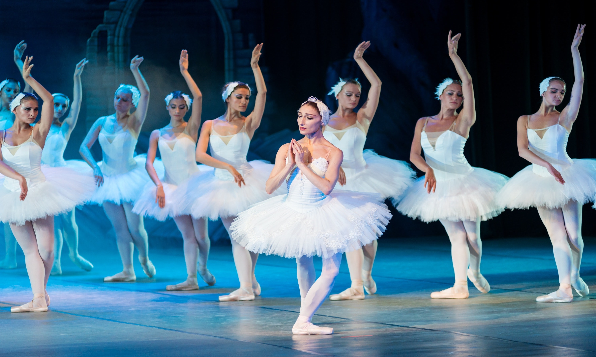
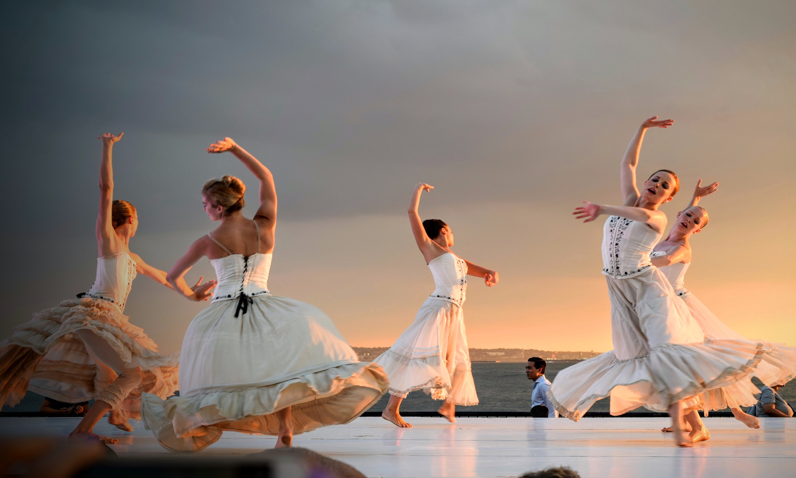
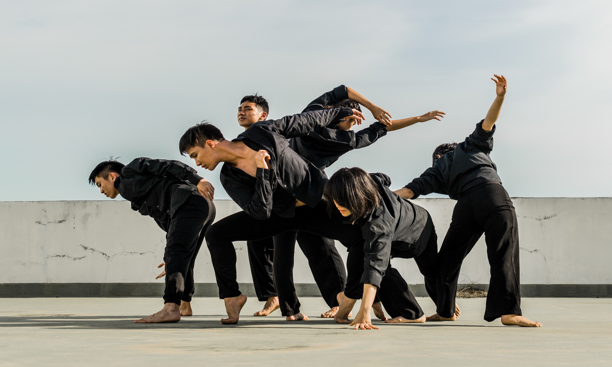

1 / 6

A group of ballet dancers are performing!
2 / 6

Several folk dancers are circling!
3 / 6

Some comtemporary dancers are stretching!
4 / 6

A group of folk dancers are posing!
5 / 6

Three ballet dancers are dancing!
6 / 6
One jazz dancer is dancing on the floor!